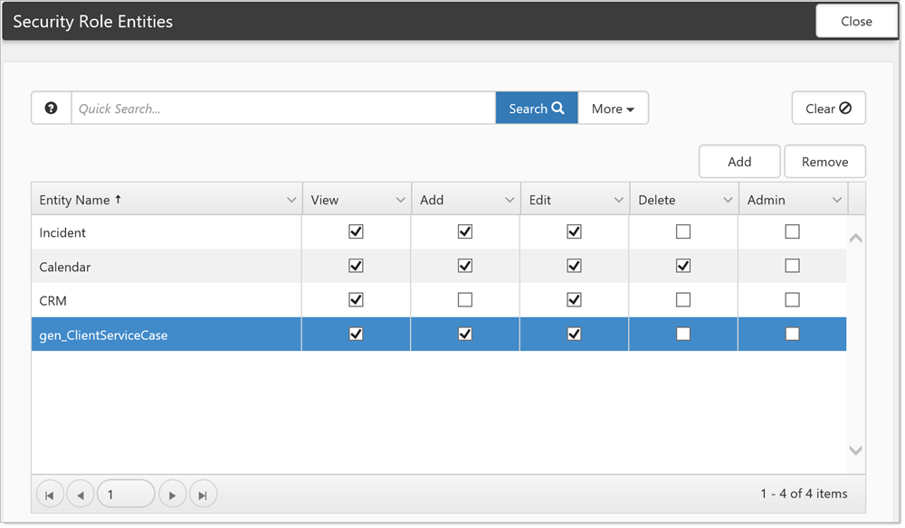
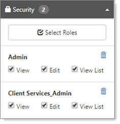
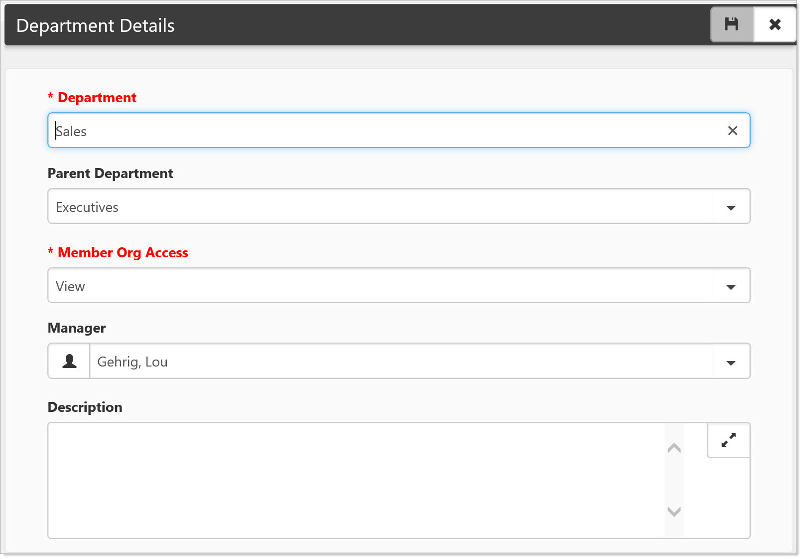
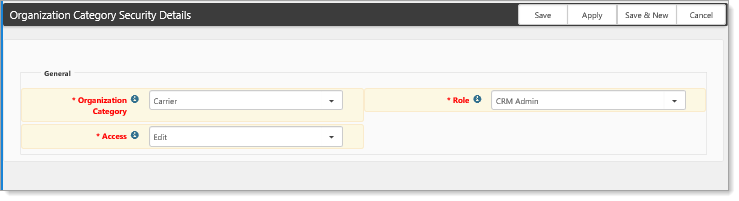
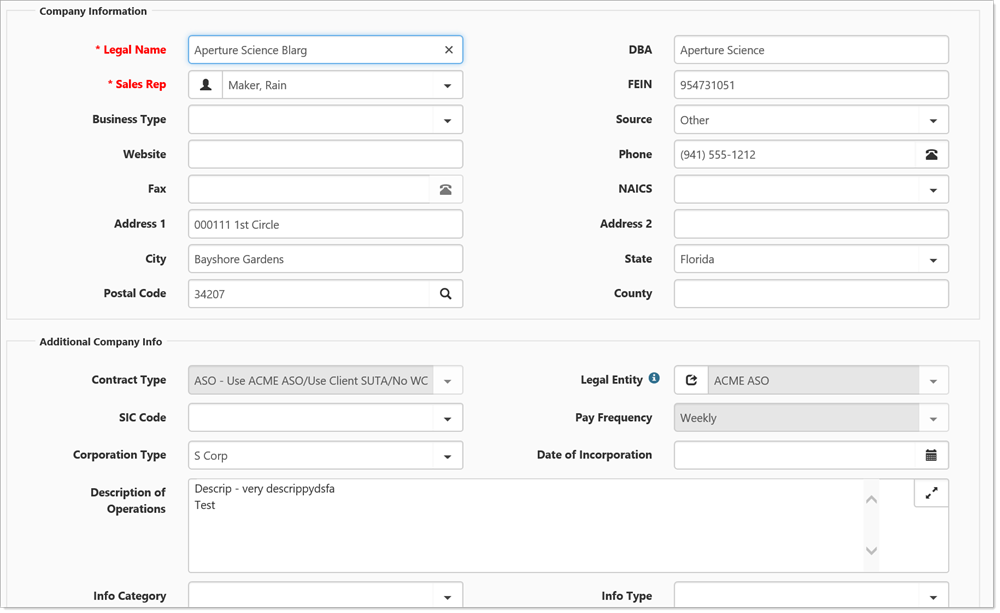
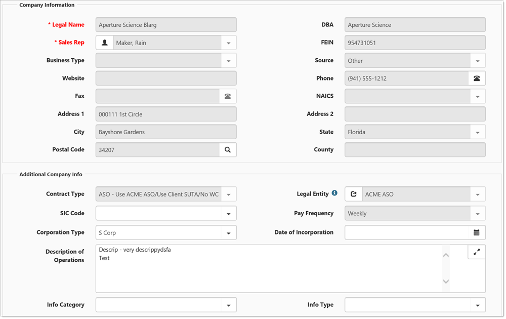

This document discusses security configuration for Organizations and Workspaces in the
Role security is ubiquitous throughout
Entities are the security objects used by the application to check what rights a user has to view, create or modify a system object. Entities are most commonly created by securing a Dataform or dataform field. Securing a dataform creates a Security Entity with the same name as the dataform. For example if you secure the WhatDo dataform a security entity of gen_WhatDo is created (gen_zWhatDo for a custom dataform). In a similar way, securing a dataform field will generate a security entity for the field of dataformname_fieldname.
So securing the YouWant field on the WhatDo dataform will create a security entity named gen_WhatDo_YouWant. Once a dataform or field is marked as secure, and that entity applied to a role this item is unavailable in the system unless a user is either a Global Admin, or a member of a role with at least view only rights for that security entity. In this way you can apply very granular security to dataform objects.
This security is also hierarchical, meaning if you secure a field set on a dataform, all the fields inside the field set are secured by default, effectively hiding them unless the user has at least view rights to the field set. Careful application of Security entities and role security can make dataform configuration incredibly robust, allowing the application to have a customized look and feel for different groups of users without having a large number of dataforms.
Security entities can also be artificially created as part of the development process to secure items that are not generated by the system such as processes or custom objects like dashboards. The CRM entity for example is an object which provides a method for securing the Sales prospecting modules of ClientSpace. As with dataform field entities, the CRM_Phone entity controls rights to the Telephone field on the org and so on.
Similarly business object security can be used to secure specific attributes of the system, such as the biz_clientservicecase_massupdate object that secures the mass update button for the client service case dashboard, or the biz_workflow_cm_accept, which provides the user access to the Accept link on the Client Master page.
Another example is Incident_AllowTaskMaintenance. Ordinarily, only the Owner or Assigned to user can edit task fields. Adding the Incident_AllowTaskMaintenance entity to a user will allow them to edit certain fields on a task even if they are not the owner or assigned to user.
Adding a dataform entity to a security role allows the administrator to secure dataform records in the following ways:

View: User can view the record (form or field) but is unable to add or manipulate the record.
Add:* User can add new dataforms of that type, or insert information into a field. Add rights apply anywhere in the system dataforms may be added, whether that is within a multiform list, from a dashboard or from the + symbol on a dataform link.
Edit: User can adjust a dataform or field.
Admin: User has full rights to a dataform or field, inclusive of all other rights.
It is important to note that add and edit are not necessarily inclusive, meaning you can give add but not edit rights, or vice versa. In the role above the user can edit an existing Client Master form, but not create the original form. It is further important to note that dataform security only applies to dataforms on workspaces the user has access to, so unless you are a global admin, workspace security supersedes dataform security. You will only have access to employee dataforms for example for employees of workspaces that you have access to, allowing workspace security to work even outside of the workspace, such as on a dashboard.
Admin Security supercedes all other rights for dataforms - this includes special security such as the Row Level security for Secured case types. Do not apply admin rights to a dataform unless you are absolutely sure you want the role members to have Global Admin Access for that dataform.
Entity security is hierarchical, meaning that it is inherited from the parent object. This means that unsecured fields in a secured fieldset will inherit the security of the fieldset. For example, an unsecured field in a secured fieldset where the user role has view rights will display the unsecured field as read-only. Users with add rights to the fieldset will see the field as unlocked until it is filled, then the field will become read-only and so on.
ClientSpace allows hierarchical security; basically, any field within a fieldset inherits the security applied to the fieldset (to a point). Individual field security within the fieldset is still followed.
In the example:
Fieldset Test 1 has been secured with Edit rights, none of the fields within the fieldset have their own security so they inherit the security of the fieldset and are also secured with Edit rights.
Fieldset Test 2 has been secured with View rights and the luState field within fieldset 2 has also been secured, but with Edit rights applied.
Fields within Fieldset 2 inherit the Fieldset security unless they have their own security, so CheckTestToo and DateToo are View only, while luState which has its own security can be edited.
There must be a minimum of view rights for a field or fieldset to appear on the form. In the following image, security has been flipped.

In the example:
Fieldset Test 1 has been secured with View rights; none of the fields within the fieldset have their own security so they inherit the security of the fieldset and are also secured with View rights.
Fieldset Test 2 has been secured with Edit rights and the luState field within fieldset 2 has also been secured, but with View rights applied.
Fields within Fieldset 2 inherit the Fieldset security unless they have their own security, so CheckTestToo and DateToo are editable, while luState which has its own security cannot be edited.
Draw a diagram of the dataform prior to adding security to it in order to map out how you would like the field access to occur. This helps you to envision the different users that will need access to the dataform and help you to better plan out how to architect the security and associated user roles.

View List: John can see all of Tim's orgs as well as his own, but if he attempts to open one of Tim's Org records the system will let him know he does not have access.
View: John can view Tim's orgs in the list and open any of Tim's orgs, but the fields are all read-only and John has no edit rights.
Edit: John can open and edit Tim's orgs as if they were his own.

When a department is created, the system will generate roles for Department Admin and Department member. Departmental security determines what access departmental members and admins have to organizations created by other members of the same department and range from None to Edit – users in the Department Admin role additionally have full admin access to the Department Members organizations unless organization fields are specifically secured by adding organization field Security Entities to a role. For example, Tim and John are both members of the sales department. Tim creates a number of organizations and John opens the Org Search dashboard. What Member Org Access rights the Sales Members have determines what access John will have to Tim's orgs.
None: John does not even see the orgs or know they exist. If John attempts to create a duplicate of an existing org, the system will warn him a dupe exists.
View List: John can see all of Tim's orgs as well as his own, but if he attempts to open one of Tim's Org records the system will let him know he does not have access.
View: John can view Tim's orgs in the list and open any of Tim's orgs, but the fields are all read-only and John has no edit rights.
Edit: John can open and edit Tim's orgs as if they were his own.

Org category security works in much the same way Departmental security works but is configured under System Admin > Security > Org Categories. Category security is configurable using the following parameters:
Organization Category: The configured security rights only apply to organizations of this Category.
Role: The configured security rights are shared by all members of this role.
Access: Determines what rights members of the configured Role will have for Organizations of the configured Category.
Org Category security dynamically updates organization security with changes to the associated Organization category. Changes made under System Admin > Security > Org Categories automatically propagate to the associated organizations with a related category. Changes include category, role, and access changes. If an Org Category is deleted, the security is removed from all associated organizations.
The list of
The Client Master dataform is an amalgam of Organization data and gen_ClientMaster dataform information. Security for the Client Master dataform and fields is controlled by dataform level security entities, while security for the Organization data presented on the Client Master is controlled by the CRM security entity. Full CRM rights can be seen in the following image.

Client Master with CRM Edit rights
While removing the Edit rights from CRM will cause the Organization fields on the Client Master to appear Read-Only.

Client Master without CRM Edit/Admin rights
The rest of the fields on the Client Master dataform are controlled by Dataform and DataformField security entities, while the header action links are controlled via biz_workflow entities, such as biz_workflow_cm_activate. For detailed information on security entities and their application, see